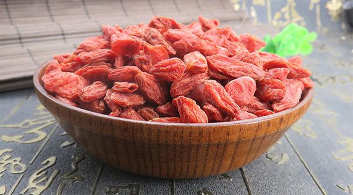
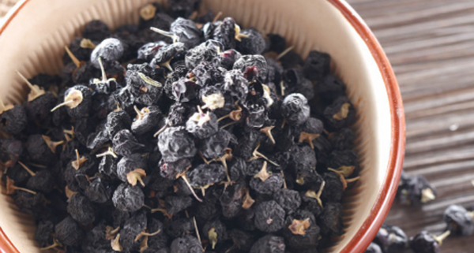

原文连接:https://www.daquan.com/post/13160.html
黑枸杞是近年来流行起来的滋补身体的药物之一，红枸杞是很早就开始使用的药材，并且近年来还流行将枸杞放入各种零食、甜品当中。他们的区别有颜色、功效、价钱、食用方法、成分和副作用。两个都是很好的滋补药，并且都能够长期食用。
黑枸杞和红枸杞的区别
1、 颜色

黑枸杞喝红枸杞最大的区别就是两个是有不一样的颜色的，黑枸杞是黑色的，但是红枸杞是红色的。黑枸杞叫做黑枸杞是因为黑枸杞长相和红枸杞非常相似但是因为外表颜色是黑色的所以黑枸杞叫做黑枸杞。
2、 功效
黑枸杞和红枸杞是有着滋补的作用，但是黑枸杞和红枸杞的功效是有着不同的。像黑枸杞有着升阳滋补，同时能够有效的美容养颜治疗失眠的作用。红枸杞更是有着很多滋补作用，像红枸杞的作用有着滋肝补肾，同时有着明目的作用。药物中很多有用到枸杞是因为枸杞还有调和药性的功效。
3、 价钱

价钱上面黑枸杞和红枸杞也是有着不同的，黑枸杞是红枸杞价钱的2-3倍，这是因为黑枸杞是张在海拔高无人的地方，随着人口的增多和环境的破坏黑枸杞的生长环境越来越少所以黑枸杞的价钱是比较贵的。并且现在黑枸杞是比较出名的滋补药材，需求比较大所以价钱也是较高的。
4、 食用方法

黑枸杞和红枸杞的食用方法也是不一样的，黑枸杞的食用的方法主要是泡水饮用，但是红枸杞的食用方法则是可以泡茶、泡酒，并且红枸杞还能够在煲汤时放入汤中。红枸杞的食用方法还有放入甜品中一起食用，能够增强甜品的口感。
5、 组成成分

黑枸杞和红枸杞也是有着组成成分的区别的，红枸杞是有着滋补的作用并且红枸杞还能够保护眼睛。黑枸杞也有着保护眼睛和滋补身体的作用，但是黑枸杞相比较红枸杞滋补护眼的功效是比红枸杞强的。
6、 副作用

黑枸杞和红枸杞的副作用也是有一定区别的，像黑枸杞的副作用是相比较红枸杞要强的，这和黑枸杞比红枸杞的药性要强。红枸杞的副作用非常小，现在多将红枸杞当做药食同源的药材。黑枸杞吃多了或者使用不当是会引起上火和腹泻的。
结语：通过上文的介绍，相信大家都了解了关于黑枸杞和红枸杞的区别有哪些，两个药材的区别是比较大的但是都有滋补的作用。